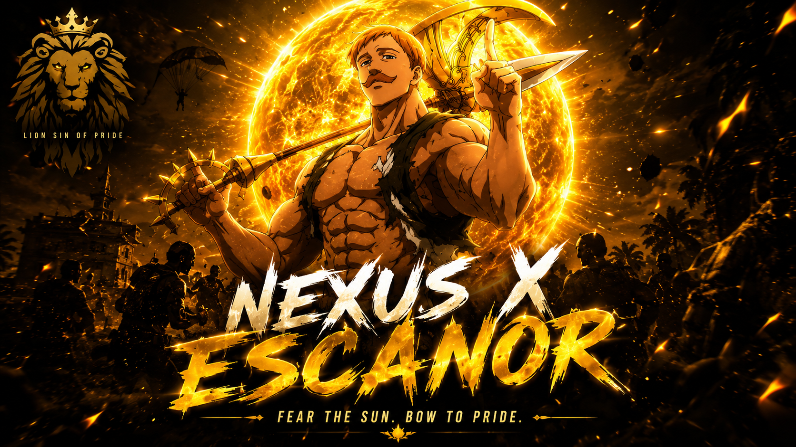

Escanor is one of the most powerful and beloved characters from the anime and manga series The Seven Deadly Sins. He is known as the Lion's Sin of Pride and is the strongest human among the Seven Deadly Sins. Escanor possesses a unique magical ability called Sunshine, which allows his strength, speed, and magical power to increase as the sun rises. During the night, he is a timid, humble, and physically weak man who lacks confidence. However, as dawn approaches, he gradually transforms into a towering warrior filled with immense strength and unmatched confidence. At exactly noon, he reaches his ultimate form, known as The One, where he becomes nearly invincible and capable of defeating even the most powerful enemies. His Sacred Treasure, the Divine Axe Rhitta, stores solar energy and greatly enhances his devastating attacks, such as Cruel Sun, Pride Flare, and Divine Sword Escanor. Despite his overwhelming pride, Escanor is honorable, courageous, and deeply loyal to his friends. He also harbors a sincere love for Merlin, one of his fellow Sins. In the final battle, Escanor pushes beyond his natural limits by using The One Ultimate, sacrificing his own life force to protect his companions and fight for the future of the world. His extraordinary courage, unwavering determination, and unforgettable quotes have made him one of the most iconic and respected characters in anime history, leaving behind a legacy that continues to inspire fans around the world. Like this by inspiring Escanor I collabed A new character with the name Nexus
WELCOME ALL
Yokaso Watashino ECSxNEX Updating website about In today's fast-changing digital world, staying updated with the latest information about **anime, current affairs, and gaming** has become an important part of entertainment and knowledge. The anime industry continues to grow rapidly with new seasonal releases, exciting manga adaptations, blockbuster anime movies, and announcements from major studios, while fans eagerly follow updates on popular series, character developments, and upcoming episodes. Current affairs keep people informed about important events happening around the world, including politics, technology, science, sports, business, environmental issues, and global developments that shape society. At the same time, the gaming industry is evolving with the release of new games, major updates, downloadable content (DLCs), esports tournaments, gaming hardware, and advancements in technologies such as virtual reality (VR), artificial intelligence (AI), and cloud gaming. Popular games frequently introduce new maps, characters, weapons, events, and seasonal content to keep players engaged. Social media platforms, gaming communities, streaming services, and news websites provide instant access to these updates, allowing fans to stay connected with the latest trends. By regularly following reliable sources, individuals can remain informed, improve their knowledge, participate in discussions, and enjoy the ever-evolving worlds of anime, global news, and gaming.